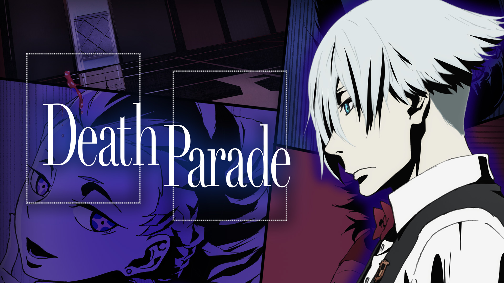
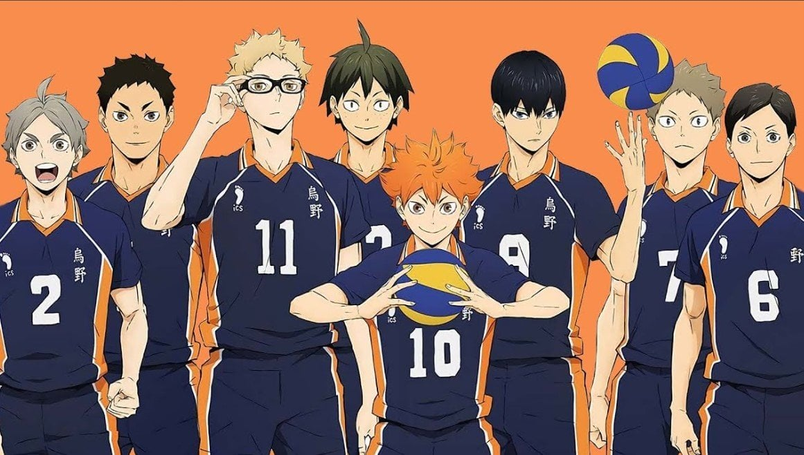

Anime is the best medicine for the soul and you can watch anything, from cooking
animes to talking beasts fighting each other. It´s the best topic for flirting.

Death Parade

It is a slow paced anime, with great character development.
It consists of ministories of
people entering a bar where they have to play "death games" to decide their fate.
Haykyuu

It is a slow paced anime, with great character development.
It consists of ministories of
people entering a gym where they have to play "death voleyball" to decide their fate.
Devilman

It is a slow paced anime, with great character development.
It consists of ministories of
people entering a party where they have to play "death dances" to decide their fate.